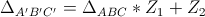

Movimentos Complexos

Rotação
Agora, você vai verificar o que acontece com o triângulo A'B'C' quando se varia apenas Z1 em uma circunferência. Para isso, o Z2 será mantido fixo em 0+0i, já que esse é o valor que não altera A'B'C'.
Instruções
Você poderá movimentar apenas o ponto Z1;
Z1 ficará restrito à circunferência de centro na origem e raio 1;
A qualquer momento você pode verificar um dos ângulos entre as retas suportes dos lados correspondentes dos triângulos. Para isso, basta selecionar os vértices desejados e a opção "ângulo entre retas";
Lembre-se sempre que o triângulo móvel é obtido a partir do fixo e dos valores de Z1 e Z2 da seguinte forma:

Varie o valor de Z1 na ferramenta ao lado e responda:
Note que o ângulo de rotação do triângulo A'B'C' em relação ao ABC é igual ao valor de um dos ângulos determinados pelas retas suportes.
Você deve ter observado que o triângulo A'B'C', móvel, varia apenas por uma rotação em relação ao triângulo ABC, fixo. O ângulo de rotação é igual ao valor de um dos ângulos entre as retas suportes de lados correspondes.
Para que ocorresse apenas a rotação, Z2 ficou fixo na origem, ou seja, Z2 = 0+0i, e |Z1| = 1. Além disso, note que o ângulo de rotação é igual ao argumento de Z1.
Corrigir todas as questões Continuar